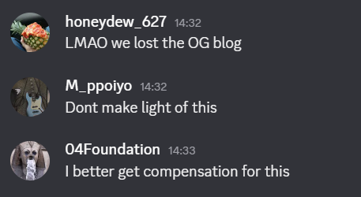

Ever since the Incident (losing our original blog), we (and we mean just Andrew, sorry about that) have been working hard not only to restore our blog, but also make it better than ever! We promise to not only bring back the stuff that you're all familiar with, but to add a bunch of brand new stuff to improve this blog.
So take a look around, see interests you.